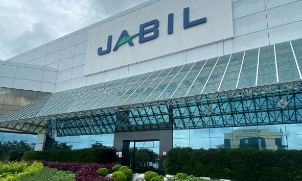
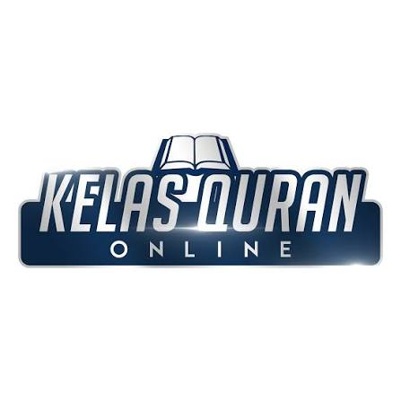

Production Operator
Jabil Circuit Sdn. Bhd.
July 2024 – September 2024
- Operated manufacturing equipment while adhering to standard operating procedures and safety regulations.
- Performed quality inspection to ensure products met production standards.
- Collaborated with team members to achieve daily production targets efficiently.
- Maintained accuracy and attention to detail in a fast-paced production environment.

Quran Tutor
Freelance
2023 – 2024
- Guided students in Quran recitation and Tajweed principles.
- Developed communication and mentoring skills through personalized learning sessions.
- Managed lesson schedules and adapted teaching approaches according to students’ abilities.
- Strengthened interpersonal, leadership, and teaching skills.